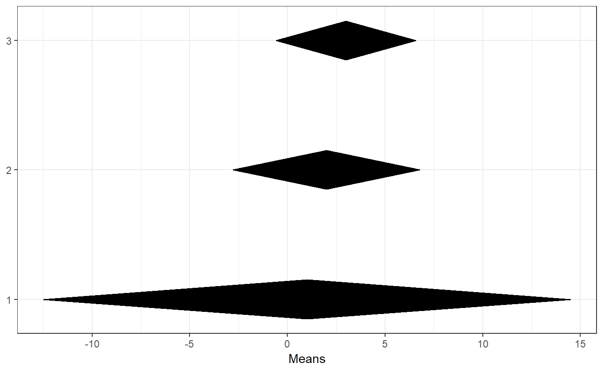
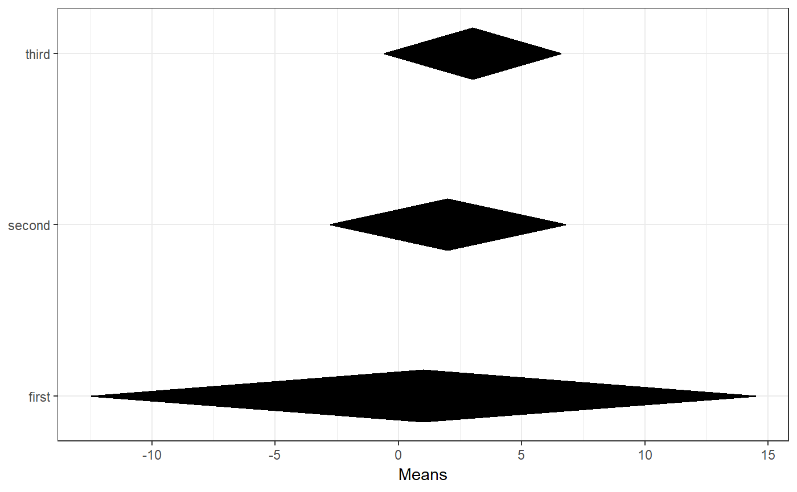
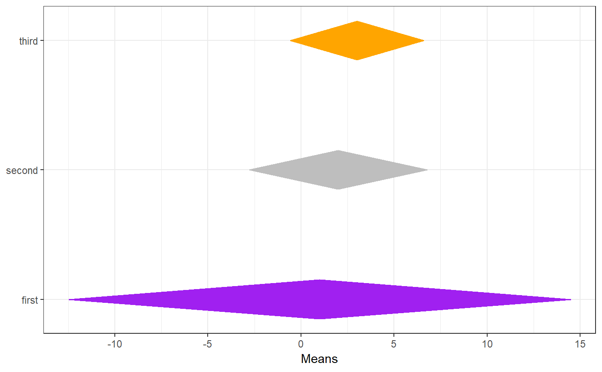
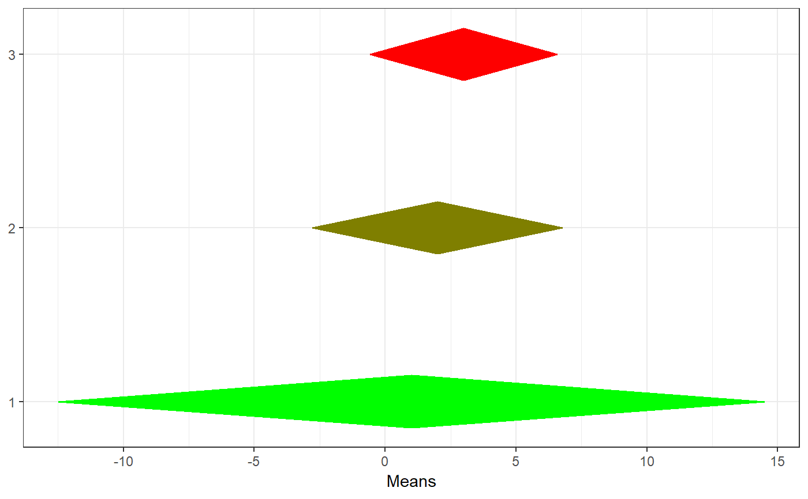
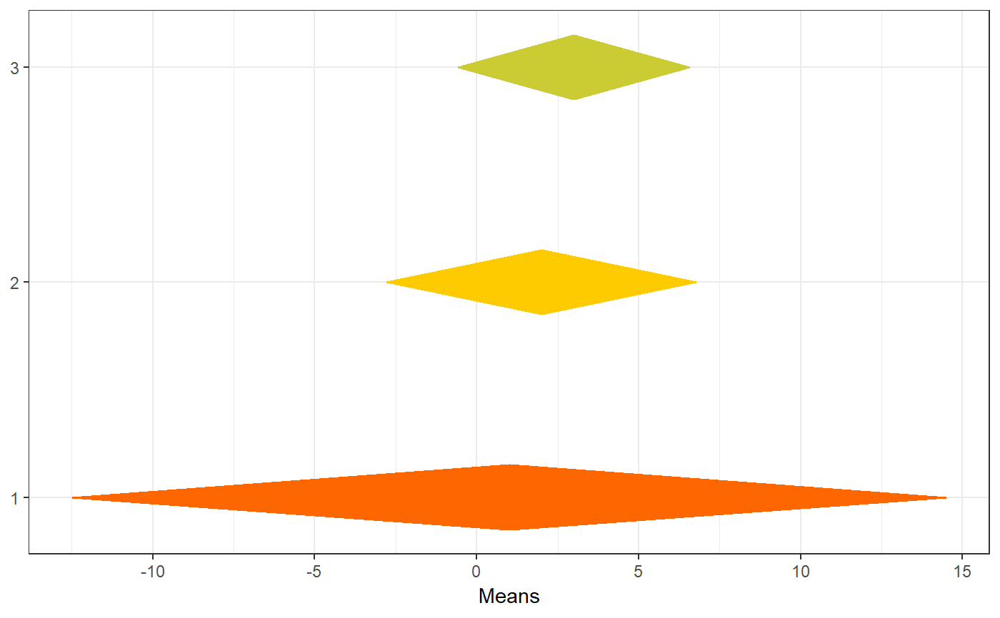

meanSDtoDiamondPlot.RdThis function generates a so-called diamond plot: a plot based on the forest plots that are commonplace in meta-analyses. The underlying idea is that point estimates are uninformative, and it would be better to focus on confidence intervals. The problem of the points with errorbars that are commonly employed is that the focus the audience's attention on the upper and lower bounds, even though those are the least relevant values. Using diamonds remedies this.
meanSDtoDiamondPlot(dat = NULL, means = 1, sds = 2, ns = 3, labels = NULL, colorCol = NULL, conf.level = 0.95, xlab = "Means", outputFile = NULL, outputWidth = 10, outputHeight = 10, ggsaveParams = list(units = "cm", dpi = 300, type = "cairo"), ...)
| dat | The dataset containing the means, standard deviations, sample sizes, and possible labels and manually specified colors. |
|---|---|
| means | Either the column in the dataframe containing the means, as numeric or as character index, or a vector of means. |
| sds | Either the column in the dataframe containing the standard deviations, as numeric or as character index, or a vector of standard deviations. |
| ns | Either the column in the dataframe containing the sample sizes, as numeric or as character index, or a vector of sample sizes. |
| labels | Optionally, either the column in the dataframe containing labels, as numeric or as character index, or a vector of labels. |
| colorCol | Optionally, either the column in the dataframe containing manually specified colours, as numeric or as character index, or a vector of manually specified colours. |
| conf.level | The confidence of the confidence intervals. |
| xlab | The label for the x axis. |
| outputFile | A file to which to save the plot. |
| outputWidth, outputHeight | Width and height of saved plot (specified in
centimeters by default, see |
| ggsaveParams | Parameters to pass to ggsave when saving the plot. |
| … | Additional arguments are passed to |
A ggplot() plot with a ggDiamondLayer() is
returned.
tmpDf <- data.frame(means = c(1, 2, 3), sds = c(1.5, 3, 5), ns = c(2, 4, 10), labels = c('first', 'second', 'third'), color = c('purple', 'grey', 'orange')); ### A simple diamond plot meanSDtoDiamondPlot(tmpDf);### A simple diamond plot with labels meanSDtoDiamondPlot(tmpDf, labels=4);### When specifying column names, specify column ### names for all columns meanSDtoDiamondPlot(tmpDf, means='means', sds='sds', ns='ns', labels='labels');### A diamond plot using the specified colours meanSDtoDiamondPlot(tmpDf, labels=4, colorCol=5);### A diamond plot using automatically generated colours ### using a gradient meanSDtoDiamondPlot(tmpDf, generateColors=c('green', 'red'));### A diamond plot using automatically generated colours ### using a gradient, specifying the minimum and maximum ### possible values that can be attained meanSDtoDiamondPlot(tmpDf, generateColors=c('red', 'yellow', 'blue'), fullColorRange=c(0, 5));